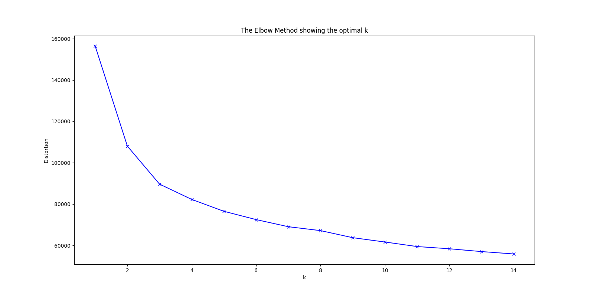
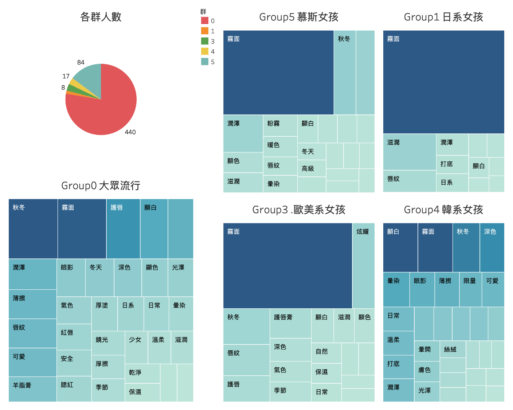
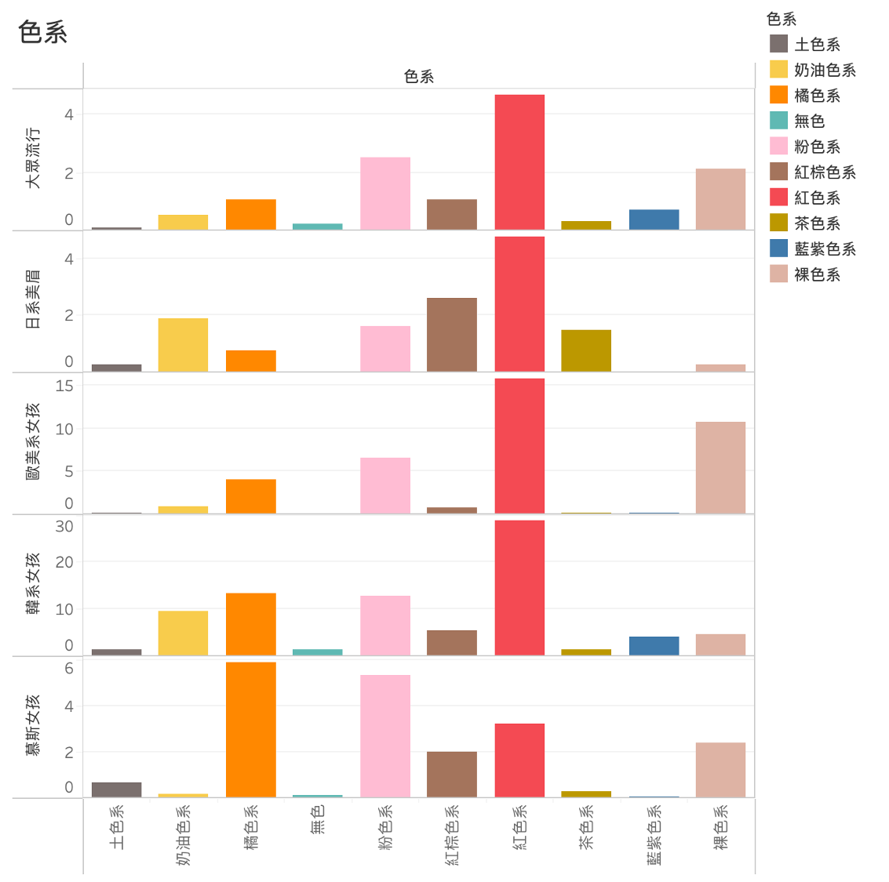

Analysis of PTT Online Community: Popular Lipstick Colors for Fall and Winter and Customer Segmentation

No prior knowledge about cosmetics? No worries, you can still choose the perfect lipstick as a Christmas gift for your girlfriend or friends by observing the language used by PTT users.
＊PTT: One of the most popular online forum in Taiwan, it is like Reddit in the US
Overview
Using Python, we scraped all the posts related to lipsticks from PTT MakeUP board between September 6 and December 28, 2022. After keyword filtering and statistical analysis, we applied K-means clustering to divide the customers into five groups based on their preferences. We then conducted statistical analysis on their lipstick color preferences.
In this project, we defined the frequency of a user’s use of keywords as their demand or preference for those keywords. For example, if a user has a demand for lip balm, we assume that they would mention lipstick more frequently in their comments. K-means clustering can divide vectors with similar values in different dimensions, which corresponds to users who have similar frequency of using certain keywords. Thus, by using K-means clustering, we can better understand the different consumer groups in the market with different preferences.
The code used in this project can be found at link
1.Scaping PTT posts
To understand the popular lipstick colors for autumn and winter, I used the Beautiful Soup package to scrape all the titles, posts, comments, authors, and commenters from the PTT MakeUP board from September 6th to December 28th. I filtered out posts that did not contain the word “lip” in the title or body to ensure that the content explored was related to lip makeup. We can use jieba to segment the words in the articles. The segmented posts are shown in the figure below.

Tip: After cutting keywords, you can save time in processing data by deleting common word suffixes or redundant words, as well as PTT symbols. In addition, it is useful to translate Chinese stopwords into English beforehand.dict.txt.big.txt Loading the dictionary into jieba can improve the segmentation of traditional Chinese words.
2.Filtering keywords.
In order to improve the accuracy of keyword extraction with the jieba package, it is necessary to add keywords related to lipstick to the jieba dictionary beforehand. Since this project aims to explore customers’ preferences for lipstick, I first searched online for the basic principles of choosing lipstick. 1 Articles on makeup techniques and tips.2 3, From the articles, I can see that people generally follow principles when choosing lipstick:
-
The finish of lipstick can generally be divided into three types: glossy (shiny)（‘水潤（亮面）’）、matte（‘霧面’）and satin finish（‘水霧’）, Also, The related products can be divided into four types lipstick(‘唇膏’)、lip gloss(‘唇釉（唇露/唇萃）’)、lip tint(‘唇蜜’)、lip balm(‘口紅’)
-
When it comes to lipstick color, in addition to personal preferences and trends, women also choose colors that suit their skin tone. For example, pink (‘粉色’) is more suitable for fair-skinned women than those with wheat skin tone. In addition, they also consider the opacity, saturation, and whitening effect of the lipstick itself.
-
When it comes to makeup techniques, in autumn and winter, women tend to apply a layer of lip balm first to deal with the problem of dry lips. To avoid the influence of the original lip color on the lipstick color or the problem of stickiness, they will apply powder and concealer as a base. In addition, the Korean-style gradient lip makeup has been popular lately. The thickness of the lipstick, whether applied before or after foundation, and layering vary from person to person based on their preferences. Other considerations for daily use of lipstick include its degree of color fading, moisturizing level, and nourishing level.
I categorize the preferences for makeup styles into cute, ethereal, sexy, elegant and intellectual, and so on.
After referring to these articles, I added these keywords and proper nouns to the system’s dictionary. excel檔，And after adding these keywords and proper nouns to the jieba dictionary and using jieba to segment the article titles and contents into words for statistics, we saved the results as an Excel file. The top ten most frequently used words are shown in the figure below:

There are some terms in the table that are unrelated to cosmetics or cannot provide information from the terms.（Ex：‘都’ - all, ‘喜歡’ - like,‘好看’ - good-looking, ‘擦’ - apply, ‘美’ - beauty…）， After removing irrelevant keywords, I generated a word cloud based on the frequency of appearance:

It can be observed that the most frequently mentioned keywords are lipstick(‘唇膏’), lip gloss(‘唇彩’), matte(‘霧面’),autumn/winter(‘秋冬’),lip lacquer(‘唇釉’),lip balm(‘護唇膏’),lip lines(‘唇紋’), and so on. After reviewing several PTT posts, it is evident that matte lip makeup is the most popular during the fall season, and people generally seek lip balm due to dry lips.
In addition, I assumed that the words appearing more than five times are more accurately segmented by jieba, so I directly retained these keywords if they were related to lipstick. As for other keywords, I filtered them out using the program.
Besides, I use strategy such as:
-
Observing the high-frequency keywords, and then summarized which words may contain the same meaning as these keywords. For example, makeup products or words that express matte(‘霧面’) used by PTT users may include frosted(‘霧光’),soft matte(‘柔霧’), matte lips(‘霧唇’)," and so on. Then, I used a program to filter out all keywords containing ‘霧’, and decided whether to keep the keywords based on their literal meaning. For example, even though spray(‘噴霧’) contains ‘霧’, it is clearly unrelated to matte(‘霧面’), so I would delete it. If a word has a similar meaning to matte(‘霧面’), such as matte lips(‘霧唇’), I would keep it.
-
Due to the wide variety of keywords related to colors, such as different expressions for “pink” including pink(‘粉紅’), pink(‘粉’), pinkish(‘偏粉’), Rosy(‘粉嫩’), etc., I used a program to filter out possible color-related keywords. For example, to find all keywords related to pink, I first filtered out all words containing ‘粉’ and then made human judgments on them.
When discussing colors with everyone, in addition to searching online for popular lip colors in autumn and winter (such as maple red(‘楓紅’), milk tea brown(‘奶茶棕’), etc.), I also use programs to filter out words that contain color(‘色’). I then refer to the source articles of these words to determine whether to include this color in the keywords (for example, if the article mentions white(‘白’), it may not refer to white lipstick but rather the packaging of the lipstick).
3. Organizing keywords
Many of these keywords have different literal meanings but represent the same concept. For example, “潤感” and “潤光” both express “moisturizing,” so I created an excel sheet to store “潤感” and “潤光” in the “Keywords” column and “moisturizing” in the “Corresponding” column. The final list of keywords that do not relate to color can be found in字典.xlsx，the keywords related to color are saved in 顏色.xlsx。
4. Count the frequency of the use of keywords for each account based on their comments.
One way to analyze the preferences of each commenter is to find the keywords they like. In this process, I counted the number of target keywords used in each comment and then aggregated them based on the commenters’ accounts to obtain the total number of target keywords used by each commenter in all their comments.
However, looking at comments alone may not be enough to know what the commenter is discussing. Therefore, I also took into account the context of the comments to get a more complete picture of the commenter’s thoughts. Our goal is to use the frequency of keywords appearing in comments to determine the preferences of the commenters. Compared to the context, the comments themselves can better represent the commenters. Therefore, in calculating the frequency of target keywords in each comment, I used a 1:9 weighting to add the frequency of keywords appearing in the context to the frequency of keywords appearing in the comments.
In the previous step, I created a table that maps similar keywords with different meanings to the same term. In the process of counting the frequency of target keywords, whenever a keyword appears, I used this table to map the keyword to the corresponding term category and then added them up. For example, “潤感” and “潤光” both express “潤澤”, so after counting the frequency of “潤感” and “潤光”, I added them together to get the frequency of “潤澤”. This way, we can more accurately calculate the true volume of target keywords and avoid the problem of target keywords being ignored in articles and comments due to different expressions.
After obtaining the number of occurrences of all target keywords in each comment, I aggregated them based on the commenters and calculated the number of times each commenter used target keywords, using these numbers to represent the degree of preference for different topics by the commenters.
5. K-means Clustering
In the previous step, we obtained the usage count of each target keyword for each commenter, and the detailed data can be found in excel
These keyword usage frequencies represent the degree of preference, and thus we can use K-Means clustering to cluster these statistical quantities into vectors and obtain groups of consumers with different demands and preferences, grasping the different faces of consumers in the market.
To determine the optimal number of clusters, I wrote a for loop to perform K-Means clustering multiple times with the number of clusters ranging from 1 to 15. Finally, I plotted the number of clusters against the inertia (the sum of distances between each point and its assigned cluster center, used to measure the clustering error), and the results are shown below.

As the number of clusters increases, the inertia tends to decrease, with a minimum value of 0 when the number of clusters is equal to the number of data points. This is similar to the principle that dividing a random forest into smaller parts can lead to lower training errors. However, in determining the optimal number of clusters, we aim to minimize both the inertia and the number of clusters. Therefore, the ideal number of clusters is often determined by identifying the point at which the inertia starts to decrease more slowly. In this case, I selected n=6 as the number of clusters.
When performing the K-Means clustering, I only used the keywords related to preference, excluding those related to color, in order to simplify the clustering process. We can also examine whether consumers with different preferences have different color preferences after clustering.
Result-Visualization
We have a total of six customer groups, and since group 2 has only one person, I will not discuss it. Below is the result visualized using Tableau after removing group 2 data:

From the pie chart showing the number of people in each group, we can see that group 0, with 440 people, is the largest group, while group 5, with 84 people, is the second largest. Groups 1, 3, and 4 have fewer than 20 people each and are considered small groups.
I used a Tree map to visualize the preference level of each customer group for different keywords. The larger the block in the Tree map, the more frequent the appearance of the keyword, indicating a higher preference and demand for that keyword among the consumers in that group.
From the Tree maps representing the preference levels of each group towards different keywords, we can observe the following:
- No matter which group of customers, matte(‘霧面’) and fall/winter(‘秋冬’) are almost always the most frequently appearing keywords. This may be because matte lip makeup is particularly popular in the fall and winter seasons.
- Group 0 is the largest cluster with 440 individuals, therefore I define it as the mainstream trend and also representing the demand of most girls.
The Tree map of Group 0, representing the mainstream demand, tells us that:
＊In terms of lipstick preferences, the most favored texture is matte('霧面'), followed by glossy('潤澤').
＊They value lip protection('護唇') the most in terms of functionality, and they also place high importance on moisturizing('滋潤') and hydration('保濕'). They like to use lip balms made with lanolin('羊脂膏').
＊They generally worry about lip lines('唇紋'), which may be due to the dryness of autumn and winter and the use of matte lipsticks that tend to accentuate lip lines more than other types of lipsticks.
＊They tend to prefer a cute('可愛'), girlish('少女') style.
＊In addition to lip care('護唇'), they also place a great emphasis on brightening('顯白'). Discussions about blush and red lipstick('紅唇'), which can enhance complexion and radiance('氣色'), are also quite popular among them.
＊They prefer thinly applied('薄擦') lipsticks.
- Group 1 consists of 8 individuals who show a strong preference for Japanese-style makeup(‘日系妝容’) (using the keyword more frequently than other groups), and also place great importance on the moisturizing(‘滋潤’) properties of lipsticks and the issue of lip lines(‘唇紋’). Before applying lipstick, they usually use a lip primer(‘打底’), and tend to choose colors that make their complexion look fairer(‘顯白’). In addition to popular matte(‘霧面’) lipsticks, they also prefer glossy(‘潤澤’) lipsticks.
- Group 3 consists of 18 individuals who have a strong preference for natural(‘自然’) makeup. Compared to other groups, they place more emphasis on lip care(‘保養’) and complexion(‘氣色’). They also show a particularly high interest in Chanel’s ultra-shiny(‘超炫耀’) lipstick series and tend to choose colors that make their teeth appear whiter(‘顯白’) or that are darker in shade. They value the color payoff of lipsticks and are likely fans of European and American styles(‘歐美風格’).
- Group 4 has 17 members, and they are very concerned about looking fair and white(‘顯白’). They also like dark-colored(‘深色’) lipsticks. Their style preference leans towards the gentle(‘溫柔’) and cute(‘可愛’) daily(‘日常’) look, and unlike other groups, they have a special preference for gradient lip makeup(‘暈染唇妝’). They apply a thin layer(‘薄擦’) of base before applying lipstick, and pay attention to coordinating with eye makeup(‘眼妝’). Additionally, they seem to also prefer limited edition(‘限量’) products. Because of their preference for gradient lip makeup(‘暈染’), I call them the “Korean style girls.”(‘韓系女孩’)
- Group 5 consists of 84 people. In addition to the popular matte(‘霧面’) lip makeup, they focus on the hazy feeling of velvet(‘絲絨’) and powder matte(‘粉霧’). They prefer warm colors(‘暖系’) and pay attention to the color rendering(‘顯色’) and moisturizing(‘潤澤’) of the lipsticks.
Color preferences among different groups
After categorizing the commentators based on their needs regarding lipsticks, I also counted the number of times each group mentioned color-related keywords as a basis for judging their color preferences.
To facilitate comparison of the degree of preference for different colors among different groups, I added up the number of times each group mentioned color-related keywords and divided it by their population, calculating the average number of times each person in the group mentioned color-related keywords as a comparison standard.
The visualized results are as follows:

Firstly, let’s analyze the preferred colors for each group:
-
Except for Group 5, almost all other groups prefer red(‘紅色’) lipsticks the most.
-
The general trend among the public is to favor red(‘紅色’) lipstick as the most popular, followed by pink shades(‘粉色系’) and nude shades(‘裸色系’) in third place. There is also a demand for shades of red-brown(‘紅棕色系’), orange(‘橘色系’), and creamy textures(‘奶油系’).
-
Group 1, the Japanese-style girls(‘日系美眉’), prefer red(‘紅色’) and red-brown lipsticks(‘紅棕色系’). At the same time, they have a greater preference for earthy-tone(‘土色系’) lipsticks than other groups, so I concluded that they like lipsticks with a red-brown or brownish-red hue. In addition, they also prefer lip makeup with a creamy(‘奶油’) texture.
-
Group 3, who like Western(‘歐美風’) and Chanel-style glamorous(‘超炫耀’) girls, have the highest demand for red(‘紅色’) lipstick, and are also the second highest among all groups, except for Group 4, for red(‘紅色’) lipsticks. It is worth noting that their demand for nude(‘裸色系’) lipsticks is higher than other groups, which is consistent with the preferences of Western women. However, compared to other groups, their demand for brownish-red(‘茶色’), reddish-brown(‘紅棕’), and earthy(‘土色’) lipsticks is relatively low.
-
Group 4 Korean girls(‘韓系女孩’) have the highest demand for red(‘紅色’) lipstick among all the groups of girls, which is likely due to their emphasis on looking fair-skinned(‘顯白’) compared to other groups. Additionally, they prefer lighter and fresher shades of pink(‘粉色’) and orange(‘橘色’), similar to Japanese girls(‘日系女孩’), and also have a preference for creamy(‘奶油系’) textures in lip makeup. They have relatively less demand for nude(‘裸色’), red-brown coffee(‘紅棕咖啡’), and earthy tea colors(‘土色茶色’).
-
Group 5, the Mousse Girls(‘慕斯女孩’), differ from other groups in that they do not have as much demand for red(‘紅色’) lipsticks. They prefer orange(‘橘色系’) lipsticks, followed by pink ones(‘粉色系’). This echoes the previous analysis that they prefer warm colors(‘暖色系’). It is speculated that they may like a lively and fresh style.
If we divide the colors into different shades, the preferences of each group are shown in the following chart.

color preference（color）
One notable aspect is that Group 1 Japanese girls(‘日系女孩’) prefer chestnut brown(‘栗子色’) in the red-brown color range(‘紅棕色系’), while Group 5 Mousse girls(‘慕斯女孩’) prefer maple brown(‘楓色’). In addition, their preference for pink shades(‘粉色系’) is mainly rose(‘玫瑰色’), and for orange shades(‘橘色系’), it is orange(‘橙色’) and chestnut orange(‘栗橘’).
How to apply the project results in practice
In addition to clarifying market demand and understanding customer demographics, the results can also be applied to recommendation systems. We can collect consumer comments on social media platforms and extract the keywords they use. After statistical analysis, we can input them into a pre-trained K-means model to predict which type of consumer they may belong to, and then make personalized recommendations. For example, if we predict that the consumer is a European or American girl, we can recommend more dazzling lipsticks or red/nude lipsticks.
In addition, we can also use the market demands analyzed to determine how to promote or improve our products. From the visualized reports, we can see that the demands of the general public revolve around matte lipsticks, lip care, moisturizing, reducing lip wrinkles, and brightening effects. Therefore, we can focus on satisfying these needs in the direction of improving and advertising our lipstick. Additionally, the general public tends to prefer cute styles, so we can choose female celebrities with similar images to endorse our products.
Improvement direction
This project is keyword-oriented, and our understanding and selection of keywords can greatly influence the analysis results. Therefore, it may be helpful to consult relevant experts beforehand to choose keywords that accurately describe the demand for lipsticks and understand the different expressions of these keywords. This approach may be more efficient and accurate than searching for articles online or directly using jieba to segment words.